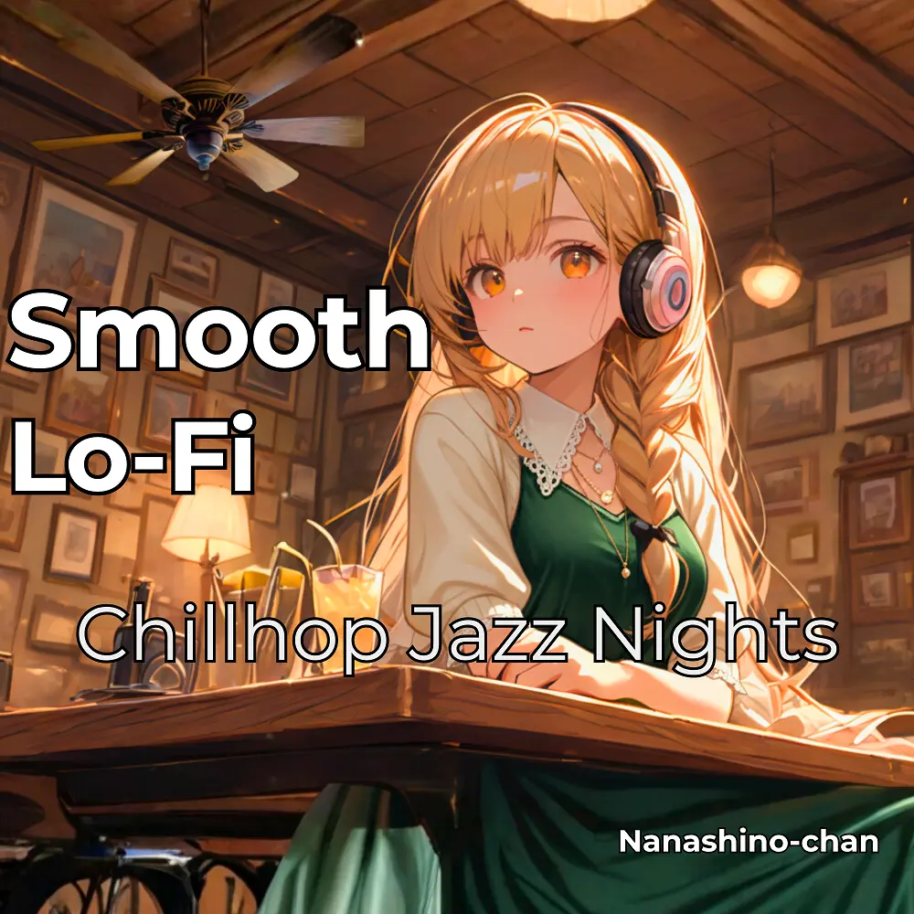

Lo-Fi · Chillhop · Jazz
Smooth Lo-Fi Chillhop Jazz Nights
Nanashino-chan
Nanashino-chanの「Smooth Lo-Fi Chillhop Jazz Nights」。Lo-Fi / Chillhop / Jazzを楽しめる全23曲のインストゥルメンタル作品です。「Evening Sketch / Velvet Loops」などを収録。気になる曲を試聴して、配信サービスでお気に入りを見つけてください。
2026-02-20 リリース · 23 曲 · Instrumental
アルバムを試聴
気になる音楽を、ここから。
曲を選ぶまでジャケットを表示します。試聴にはYouTubeを使用します。
YOUTUBE PREVIEW
試聴する曲を選んでください
曲を選ぶまでジャケットを表示します。試聴にはYouTubeを使用します。
再生できない場合は、配信サービスでアルバムや曲を開いてください。
配信サービスでアルバムを探す
「検索」のリンクは検索結果を開きます。サービス内でアルバムや曲を選択してください。
収録曲一覧 23
- 01Evening Sketch
- 02Velvet Loops
- 03City Breeze
- 04Crackling Coffeehouse
- 05Late Hour Glow
- 06Quiet Avenue
- 07Satin Steps
- 08Jazz After Rain
- 09Lo-Fi Dreams
- 10Nightfall Routine
- 11Moonlight Blend
- 12Keys in the Dust
- 13Smooth Transition
- 14Drifted Vinyl
- 15Lazy Skyline
- 16Window Jazz
- 17Faded Notes
- 18Dusk Reverie
- 19Warm Pulse
- 20Night Café
- 21Hushed Melodies
- 22Analog Silence
- 23Closing Scene
SNSで使いたい音源を探す
「Nanashino-chan ＋ 曲名」をコピーして、SNSアプリの音源検索に貼り付けてください。音源の表示は地域やアカウントにより異なります。コピー機能は利用許諾を付与するものではありません。